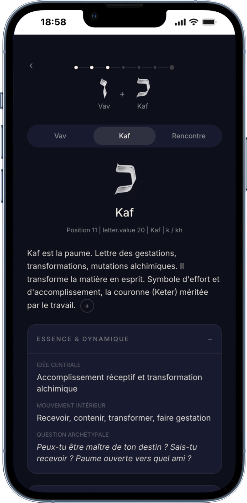
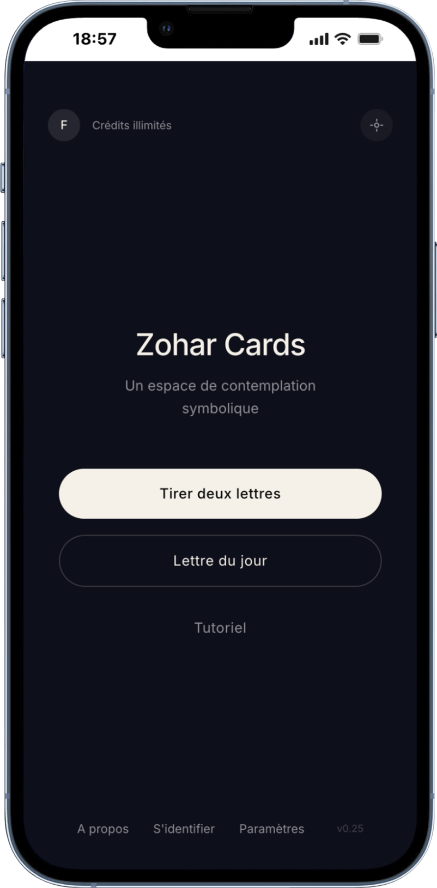
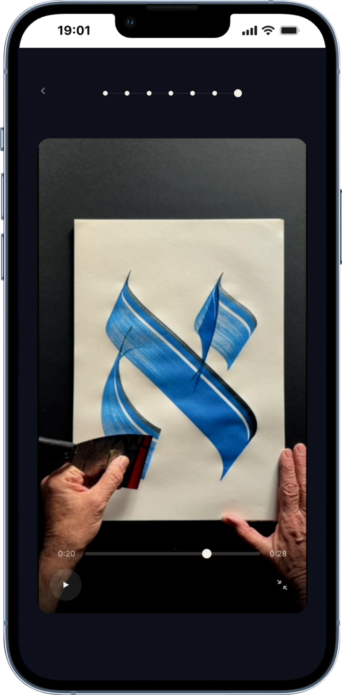
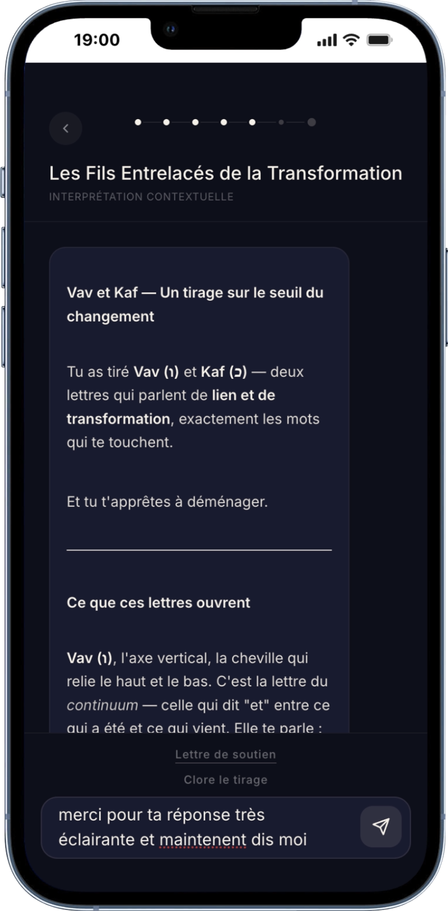
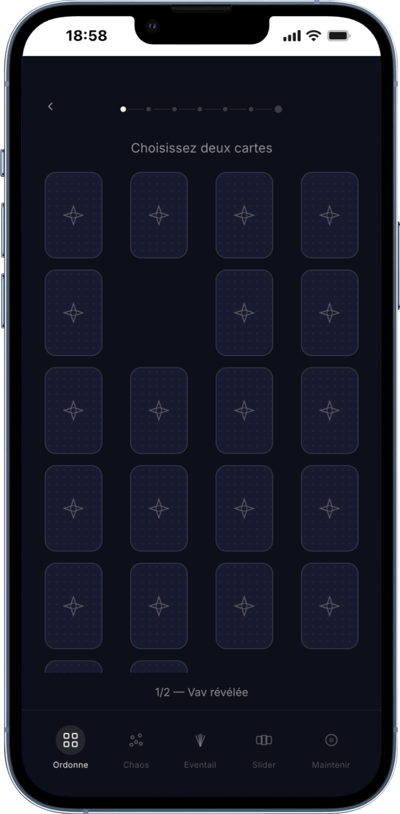

Un pont entre tradition millénaire et design moderne. Tirez les lettres, interrogez le mystère, et laissez la Kabbale éclairer votre questionnement intérieur.

Zohar Cards n'est pas un simple outil de tirage. C'est un espace de minimalisme où le bruit du monde s'estompe. Chaque écran, chaque interaction est pensé pour induire le calme, la concentration et le respect du sacré. L'application vous invite à ralentir, à tirer des cartes, à lire des interprétations profondes et à vivre chaque lettre par le souffle et le mouvement.
Calligraphe de renommée internationale, écrivain et chercheur, Frank Lalou consacre sa vie à l'étude de la symbolique et de la forme des lettres hébraïques.
"Frank Lalou ouvre avec cette application un chemin sensible au cœur des 22 lettres hébraïques, entre symbolique, questionnement intérieur et transformation."
Son expertise garantit la profondeur, le respect et l'exactitude des interprétations offertes par l'application, ancrant l'intelligence artificielle dans une authentique transmission traditionnelle.
Laissez-vous guider à travers une expérience unique de tirage et d'interprétation.

Choisissez la façon dont vous souhaitez interroger le destin. En éventail classique, dispersées dans le chaos ou soigneusement alignées en grille, l'application s'adapte à votre ressenti du moment. Laissez l'invisible choisir ou saisissez vous-même les lettres qui vous appellent.
Confiez ce qui habite votre esprit et posez votre question. L'application utilise une Intelligence Artificielle de pointe, guidée par les enseignements de la Kabbale, pour analyser le couple de lettres tiré. Découvrez l'alchimie secrète et le message qu'elles tissent ensemble spécifiquement pour vous.


Ne vous contentez pas de lire. Zohar Cards vous invite à ressentir la vibration de chaque lettre. Respirez et méditez au rythme du symbole, observez la calligraphie, ou mettez votre corps en mouvement avec le Téhima (la gestuelle des lettres hébraïques).
Ajustez l'application selon vos préférences. Choisissez parmi différentes polices hébraïques pour changer la résonance graphique des lettres. L'application est disponible en français et en anglais, avec un suivi de votre historique et de votre profil personnel.

Ouvrez la porte vers une introspection symbolique et profonde. Sans inscription requise pour commencer.
Accéder à l'application